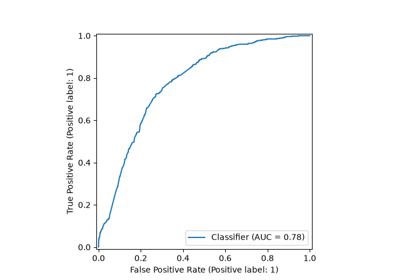

SkrubLearner#
- class skrub.SkrubLearner(data_op)[source]#
Learner that evaluates a skrub DataOp.
This class is not meant to be instantiated manually,
SkrubLearnerobjects are created by callingDataOp.skb.make_learner()on a DataOp, or by accessing thebest_learner_attribute of aParamSearchafter fitting it.- Attributes:
- classes_
Methods
Describe parameters for this learner.
find_fitted_estimator(name)Find the scikit-learn estimator that has been fitted in a
.skb.apply()step.get_params([deep])Get parameters for this estimator.
report(*, environment, mode, ...)Call the method specified by
modeand return the result and full report.set_params(**params)Set the parameters of this estimator.
truncated_after(what)Extract the part of the learner that leads up to the given step.
get_param_grid
- describe_params()[source]#
Describe parameters for this learner.
Returns a human-readable description (in form of a dict) of the parameters (outcomes of choose_* objects contained in the DataOp).
- find_fitted_estimator(name)[source]#
Find the scikit-learn estimator that has been fitted in a
.skb.apply()step.This can be useful for example to inspect the fitted attributes of the estimator. The
applystep must have been given a name with.skb.set_name()(see examples below).- Parameters:
- name
str The name of the
.skb.apply()step in which an estimator has been fitted.
- name
- Returns:
- scikit-learn estimator
The fitted estimator. Depending on the nature of the estimator it may be wrapped in a
skrub._apply_to_each_col.ApplyToEachColorskrub._apply_to_sub_frame.ApplyToSubFrame, see examples below.
See also
skrub.DataOp.skb.set_nameGive a name to this DataOp.
skrub.DataOp.skb.applyApply a scikit-learn estimator to a dataframe or numpy array.
Examples
>>> from sklearn.decomposition import PCA >>> from sklearn.dummy import DummyClassifier >>> import skrub >>> from skrub import selectors as s
>>> orders = skrub.datasets.toy_orders() >>> X, y = skrub.X(), skrub.y() >>> pred = ( ... X.skb.apply(skrub.StringEncoder(n_components=2), cols=["product"]) ... .skb.set_name("product_encoder") ... .skb.apply(skrub.ToDatetime(), cols=["date"]) ... .skb.apply(skrub.DatetimeEncoder(add_total_seconds=False), cols=["date"]) ... .skb.apply(PCA(n_components=2), cols=s.glob("date_*")) ... .skb.set_name("pca") ... .skb.apply(DummyClassifier(), y=y) ... .skb.set_name("classifier") ... ) >>> learner = pred.skb.make_learner() >>> learner.fit({'X': orders.X, 'y': orders.y}) SkrubLearner(data_op=<classifier | Apply DummyClassifier>)
We can retrieve the fitted transformer for a given step with
find_fitted_estimator:>>> learner.find_fitted_estimator("classifier") DummyClassifier()
Depending on the parameters passed to
DataOp.skb.apply(), the estimator we provide can be wrapped in a skrub transformer that applies it to several columns in the input, or to a subset of the columns in a dataframe. In other cases it may be applied without any wrapping. We provide examples for those 3 different cases below.Case 1: the
StringEncoderis a skrub single-column transformer: it transforms a single column. In the learner it gets wrapped in aApplyToEachColwhich independently fits a separate instance of theStringEncoderto each of the columns it transforms (in this case there is only one column,'product'). The individual transformers can be found in the fitted attributetransformers_which maps column names to the corresponding fitted transformer.>>> encoder = learner.find_fitted_estimator('product_encoder') >>> encoder.transformers_ {'product': StringEncoder(n_components=2)} >>> encoder.transformers_['product'].vectorizer_.vocabulary_ {' pe': 2, 'pen': 12, 'en ': 8, ' pen': 3, 'pen ': 13, ' cu': 0, 'cup': 6, 'up ': 18, ' cup': 1, 'cup ': 7, ' sp': 4, 'spo': 16, 'poo': 14, 'oon': 10, 'on ': 9, ' spo': 5, 'spoo': 17, 'poon': 15, 'oon ': 11}
This case (wrapping in
ApplyToEachCol) happens when the estimator is a skrub single-column transformer (it has a__single_column_transformer__attribute), we pass.skb.apply(how='cols')or we pass.skb.apply(allow_reject=True).Case 2: the
PCAis a regular scikit-learn transformer. In the learner it gets wrapped in aApplyToSubFramewhich applies it to the subset of columns in the dataframe selected by thecolsargument passed to.skb.apply(). The fittedPCAcan be found in the fitted attributetransformer_.>>> pca = learner.find_fitted_estimator('pca') >>> pca ApplyToSubFrame(cols=glob('date_*'), transformer=PCA(n_components=2)) >>> pca.transformer_ PCA(n_components=2) >>> pca.transformer_.mean_ array([2020., 4., 4.], dtype=float32)
This case (wrapping in
ApplyToSubFrame) happens when the estimator is a scikit-learn transformer but not a single-column transformer, or we pass.skb.apply(how='frame').The
DummyRegressoris a scikit-learn predictor. In the learner it gets applied directly to the input dataframe without any wrapping.>>> classifier = learner.find_fitted_estimator('classifier') >>> classifier DummyClassifier() >>> classifier.class_prior_ array([0.75, 0.25])
This case (no wrapping) happens when the estimator is a scikit-learn predictor (not a transformer), the input is not a dataframe (e.g. it is a numpy array), or we pass
.skb.apply(how='no_wrap').
- report(*, environment, mode, **full_report_kwargs)[source]#
Call the method specified by
modeand return the result and full report.See
DataOp.skb.full_report()for more information.- Parameters:
- Returns:
dictThe result of
DataOp.skb.full_report: a dict containing'result','error'and'report_path'.
Examples
We start by creating the learner for a simple DataOp:
>>> import skrub >>> from sklearn.linear_model import LogisticRegression >>> from sklearn.datasets import make_classification >>> pred = skrub.X().skb.apply(LogisticRegression(), y=skrub.y()) >>> X, y = make_classification(n_samples=20, random_state=0) >>> split = pred.skb.train_test_split({'X': X, 'y': y}, shuffle=False) >>> learner = pred.skb.make_learner()
We can now obtain reports for the different methods of the learner such as ‘fit’, ‘predict_proba’, etc.
>>> fit_results = learner.report( ... environment=split["train"], mode="fit", open=False ... ) >>> fit_results['report_path'] PosixPath('.../skrub_data/execution_reports/full_data_op_report_.../index.html')
Note that our learner has been fitted now, we can use it for predictions.
>>> predict_results = learner.report( ... environment=split["train"], mode="predict", open=False ... ) >>> predict_results['report_path'] PosixPath('.../skrub_data/execution_reports/full_data_op_report_.../index.html')
In addition to the report, we can also retrieve the actual output of the ‘predict’ method:
>>> predict_results['result'] array([0, 1, 0, 1, 1, 1, 0, 0, 0, 1, 1, 1, 0, 1, 0])
- set_params(**params)[source]#
Set the parameters of this estimator.
The method works on simple estimators as well as on nested objects (such as
Pipeline). The latter have parameters of the form<component>__<parameter>so that it’s possible to update each component of a nested object.- Parameters:
- **params
dict Estimator parameters.
- **params
- Returns:
- selfestimator instance
Estimator instance.
- truncated_after(what)[source]#
Extract the part of the learner that leads up to the given step.
This is similar to slicing a scikit-learn pipeline. It can be useful for example to drive the hyperparameter selection with a supervised task but then extract only the part of the learner that performs feature extraction.
- Parameters:
- what
strorcallable() If a string, it is the name (set with
DataOp.skb.set_name()) of the step we want to extract.If a callable, it is the search predicate: it accepts a DataOp and returns a Boolean. The first node for which it returns True is returned.
- what
- Returns:
- SkrubLearner
A skrub learner that performs all the transformations leading up to (and including) the required step.
See also
DataOp.skb.findSearch for a node directly from a DataOp rather than a SkrubLearner.
DataOp.skb.find_X_yFind the nodes that have been marked with
DataOp.skb.mark_as_X()andDataOp.skb.mark_as_y().
Examples
>>> from sklearn.dummy import DummyClassifier >>> import skrub
>>> orders = skrub.datasets.toy_orders() >>> X, y = skrub.X(), skrub.y() >>> pred = ( ... X.skb.apply( ... skrub.TableVectorizer(datetime=skrub.DatetimeEncoder(add_total_seconds=False)) ... ) ... .skb.set_name("vectorizer") ... .skb.apply(DummyClassifier(), y=y) ... ) >>> learner = pred.skb.make_learner() >>> learner.fit({"X": orders.X, "y": orders.y}) SkrubLearner(data_op=<Apply DummyClassifier>) >>> learner.predict({"X": orders.X}) array([False, False, False, False])
Truncate the learner after vectorization:
>>> vectorizer = learner.truncated_after("vectorizer") >>> vectorizer SkrubLearner(data_op=<vectorizer | Apply TableVectorizer>) >>> vectorizer.transform({"X": orders.X}) ID product_cup product_pen ... date_year date_month date_day 0 1.0 0.0 1.0 ... 2020.0 4.0 3.0 1 2.0 1.0 0.0 ... 2020.0 4.0 4.0 2 3.0 1.0 0.0 ... 2020.0 4.0 4.0 3 4.0 0.0 0.0 ... 2020.0 4.0 5.0
Note this differs from
find_fitted_estimatorwhich extracts the inner scikit-learn estimator that has been fitted inside of a single step.This contains the full transformation up to the given step:
>>> learner.truncated_after("vectorizer") SkrubLearner(data_op=<vectorizer | Apply TableVectorizer>)
The result of
find_fitted_estimatoronly contains the innerTableVectorizerthat was fitted inside of the"vectorizer"step:>>> learner.find_fitted_estimator("vectorizer") ApplyToSubFrame(transformer=TableVectorizer(datetime=DatetimeEncoder(add_total_seconds=False)))
Gallery examples#

Tutorial: Using Data Ops to build a machine-learning pipeline

Multiples tables: building machine learning pipelines with DataOps


Use case: developing locally and deploying to production